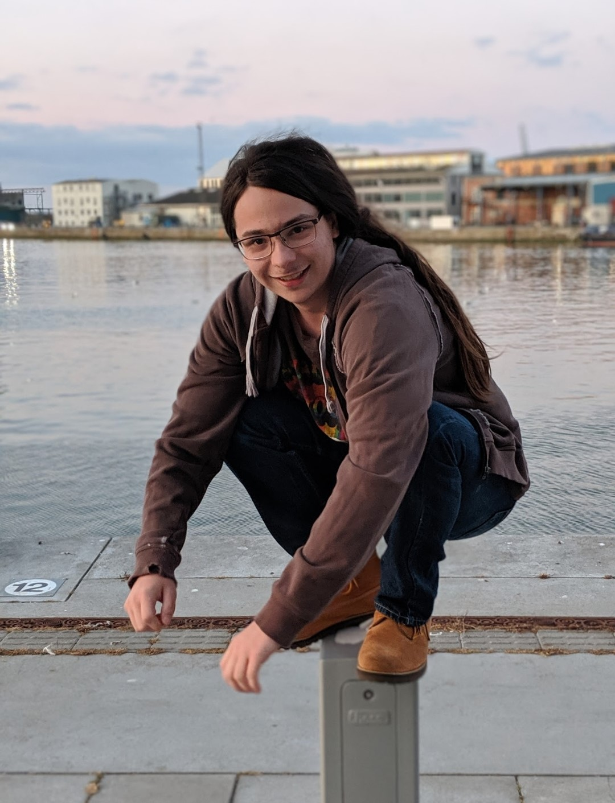

Jamie Bali
Graduate Machine Learning Engineer and Software Developer
 linkedin.com/in/jamiebali/ |
linkedin.com/in/jamiebali/ |  @jamie__bali |
@jamie__bali |  JamieBali#1234
JamieBali#1234
 Welcome to my blog / portfolio. I'm Jamie, a university graduate machine learning engineer and software developer.
I have experience in software development and testing, UX/UI design, natural language processing, computer vision,
machine learning, and intelligent agents.
Welcome to my blog / portfolio. I'm Jamie, a university graduate machine learning engineer and software developer.
I have experience in software development and testing, UX/UI design, natural language processing, computer vision,
machine learning, and intelligent agents.
I'm interested in Machine Learning, mostly with Neural Networks, artificial intellignce, intelligent agents, game theory,
natural language processing, and the future of AI research.
In my academic career, I have written papers about the effects of hyper-parameter modulation within neural systems,
face alignment through the use of cascaded regression, approaches to paraphrase identification, and my dissertation on
evaluations of various machine learning systems against complex combinatorial optimisation problems.

Outside of the academic and industrial sphere, I have many other interests. I love photography - mostly landscapes, but
I've started developing my portrait photography more recently. I have a collection of cameras for different situtations
ranging from a more modern DSLR to my 1920's medium format TLR.
I play music often, including periodically playing in a folk ensemble. I play the piano and guitar mostly, but recently
obtained a Hurdy-Gurdy which I have been learning to play.